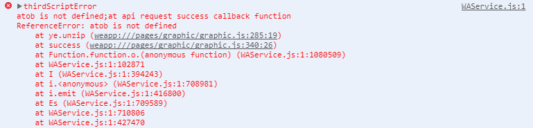

今天组长跟我们讨论了个问题，说是文章存储占用有点大，消耗宽带流量费，让我看看能不能找个方法解决一下（文章存储的是html字符串）。第一反应是没什么头绪，能想到的就是将相同的字符串替换成一个标识之类的，小程序再通过标识替换回原本的字符（感觉就不是很靠谱...）。
后来发现真的不靠谱，首先每篇文章样式可能都不一样，需要很多对应的字典，即使是这样大概预估了下，也减少不过10多k左右。唉，还是面向百度编程吧，看看有没有什么别人写好的模块可以用一下。
然后就找到了pako.js，具体实现是本地gzip压缩成base64。我在pc端稍微测试了下，原本150k左右的文章，能够压缩到14k，压缩率90%。嗯，不错，开始搞一下。可后面的路并没有我想的那么顺畅...
要是用第三方模块，肯定需要npm包管理工具是吧。npm init，然后npm i pako，一顿操作，引入文件测试。哦豁，报错找不到这个包。因为在公司一直都是用的原生小程序语法开发，没使用过三方模块，所以这方面一直没去了解，还以为和web端的差不多。没事嘛，面向百度编程。百度了一堆乱七八糟的，都没什么作用，还是乖乖的看官方文档吧，没想到几分钟的事就解决了（有时候还是文档靠谱）。
附上文档链接：https://developers.weixin.qq.com/miniprogram/dev/devtools/npm.html
数据库存储的文章已经压缩过，现在要做的就是在小程序解压缩还原成html字符串并渲染出来。
压缩文章代码：
1 function zip(str){
2 let binaryString = pako.gzip(encodeURIComponent(str), { to: 'string' }),
3 res = btoa(binaryString);
4 return res
5 }封装一个解压缩的函数（里面用到的方法都是pako写好的，直接调用），代码：
1 var pako = require('pako');
2
3 page({
4 ...
5 unzip(b64Data){
6 let strData = atob(b64Data),
7 charData = strData.split('').map(function(x){return x.charCodeAt(0);}),
8 binData = new Uint8Array(charData),
9 data = pako.inflate(binData);
10 strData = String.fromCharCode.apply(null, new Uint16Array(data));
11 return decodeURIComponent(strData)
12 }
13 }) 然后将接口拿到的文章传入到 unzip 中就可以解压出来了。当然这只是我预期的结果(因为web端这样的操作确实可行)
真机调试后小程序报错，找不到atob

原因是pako方法中使用到window.atob，而小程序不支持这个方法，所以导致报错。
解决方法：引入atob的polyfill，就是在小程序实现一个atob方法
atob polyfill 下载地址：https://github.com/davidchambers/Base64.js ( 该polyfill实现了atob和btoa)
1 const polyfill = require('../../utils/base64')
2 const {atob， btoa} = polyfill;引入atob后，再跑一遍真机测试，诶，舒服了，完美的展示出来，而且响应速度和原本的没有什么差别
然后我以为完成任务了，在测试一篇稍微大点的文章时（260k左右），小程序再次报错
而且居然是调用栈内存溢出。wtf？！初步我还以为自己逻辑写错，导致出现递归死循环之类的。检查几遍后，并没有发现错误。只能再次求助百度...
得到的原因是因为数据量过大，导致在进行 String.fromCharCode.apply(null, new Uint16Array(data)) 时，出现栈内存溢出的问题，用以下的函数代替这步即可：
1 function handleCodePoints(array) {
2 var CHUNK_SIZE = 0x8000; // arbitrary number here, not too small, not too big
3 var index = 0;
4 var length = array.length;
5 var result = '';
6 var slice;
7 var arr = [];
8 for (var i = 0, _i = array.length; i < _i; i++) {
9 arr[i] = array[i];
10 }
11 while (index < length) {
12 slice = arr.slice(index, Math.min(index + CHUNK_SIZE, length)); // `Math.min` is not really necessary here I think
13 result += String.fromCharCode.apply(null, slice);
14 index += CHUNK_SIZE;
15 }
16 return result;
17 }后面测试过程中并未出现其他问题，测试了更大的数据量后也没什么问题。至此，我在小程序使用pako.js之路告一段落。之后如果还有存在问题，我会继续更新这篇文章。若你在使用过程中发现其他问题，请告诉我。